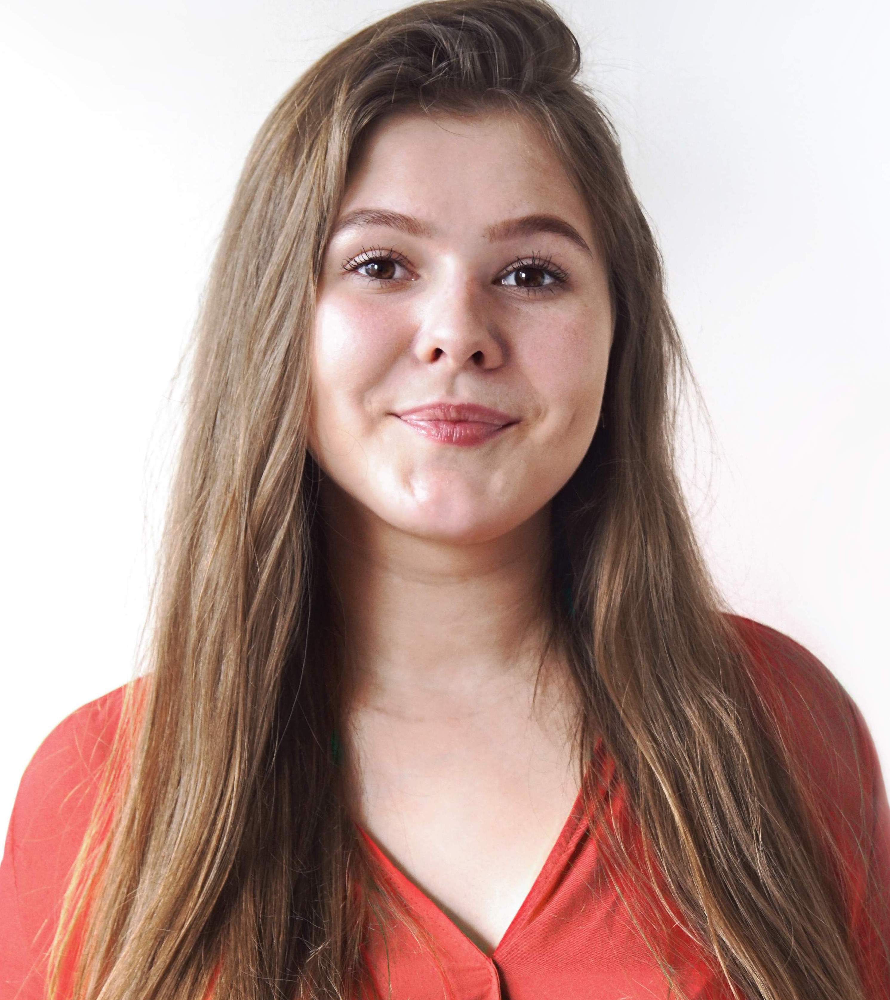

Nice to meet you
Mijn naam is Anastasiia Havrylchenko en ik ben 21 jaar oud. Ik ben een tweedejaars student Communication & Multimedia Design aan De Haagse Hogeschool waar ik opgeleid word tot een interaction designer.
Vanaf mijn 13de levensjaar vond ik digitaal ontwerpen al erg interessant en maakte ik mijn eerste stappen in het vormgeven van websites.
Vanaf het moment dat ik aan mijn studie CMD ben begonnen, ben ik niet alleen beter geworden in de richting design, maar heb ik ook een passie ontwikkeld voor het front-end development.
Ik ben geboren en opgegroeid in de mooie stad Soemy in het noordoosten van Oekraïne.
Drie jaar geleden ben ik met mijn moeder naar Nederland verhuisd. Sinds die tijd is Katwijk aan zee mijn thuis geworden. Het was altijd een droom van mij om aan de zee te wonen.
In mijn vrije tijd ben ik bezig met tekenen/schilderen en het ontwerpen van de apps en websites.
Ik ben een polyglot met een passie voor kunst, reizen en user interface design.
Om beter te worden in het ontwerpen van gebruiksvriendelijke producten ben ik op zoek naar een leuke stageplek voor de periode augustus 2018 tot februari 2019. Mijn voorkeuren hiervoor liggen bij userinterface design en front-end development.